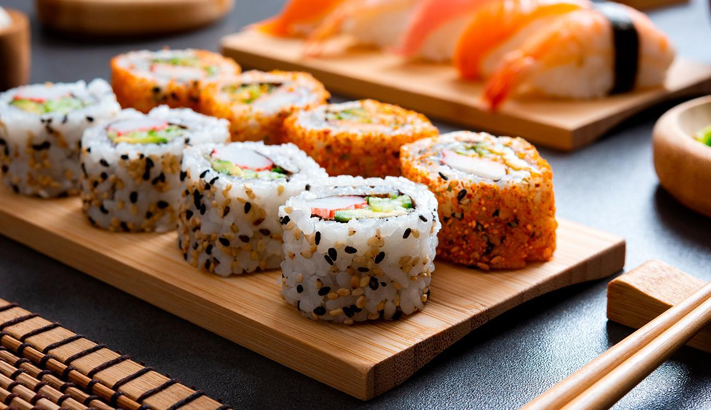

Sushi

Description
Sushi (すし, 寿司, 鮨, 鮓, pronounced [sɯɕiꜜ] or [sɯꜜɕi]) is a Japanese dish of prepared vinegared rice (鮨飯, sushi-meshi), usually with some sugar and salt, accompanied by a variety of ingredients (ねた, neta), such as seafood, often raw, and vegetables. Styles of sushi and its presentation vary widely, but the one key ingredient is "sushi rice", also referred to as shari (しゃり), or sumeshi (酢飯, "vinegared rice")
Ingredients
- 6 sheets sushi seaweed
- 1 batch prepared sushi rice
- 1/2 lb sushi-grade raw salmon
- 4 oz cream cheese
- 1 avocado
- soy sauce
Instructions
- Place the seaweed on a bamboo mat, then cover the sheet of seaweed with an even layer of prepared sushi rice. Smooth gently with the rice paddle.
- Layer salmon, cream cheese, and avocado on the rice, and roll it up tightly. Slice with a sharp knife, and enjoy with soy sauce.